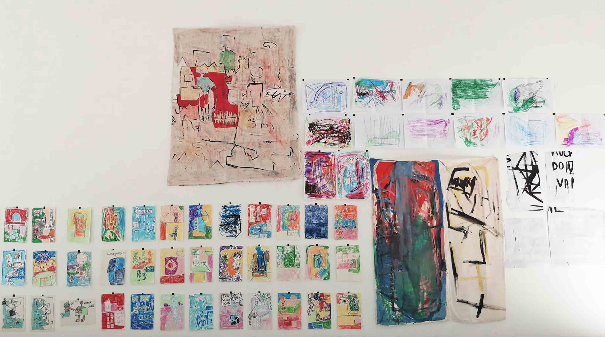
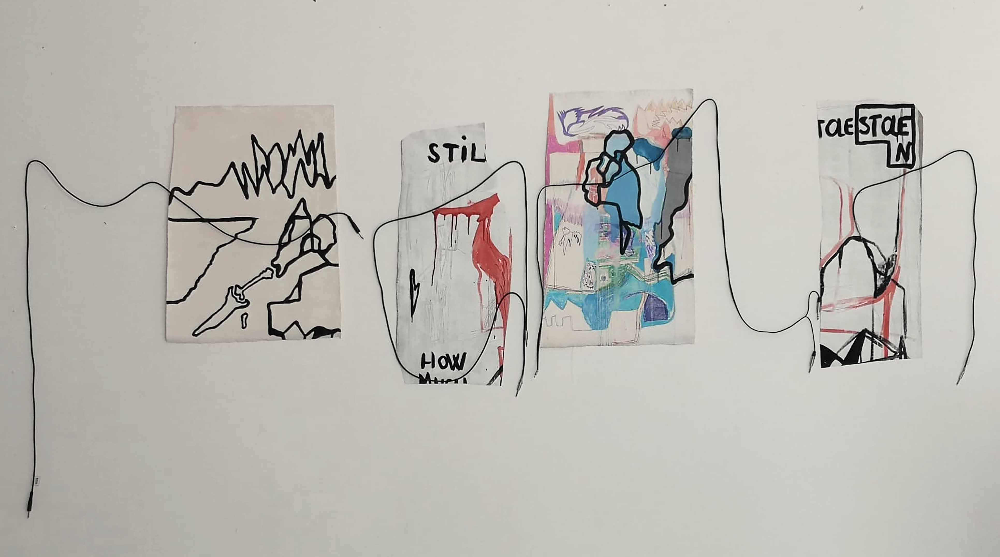
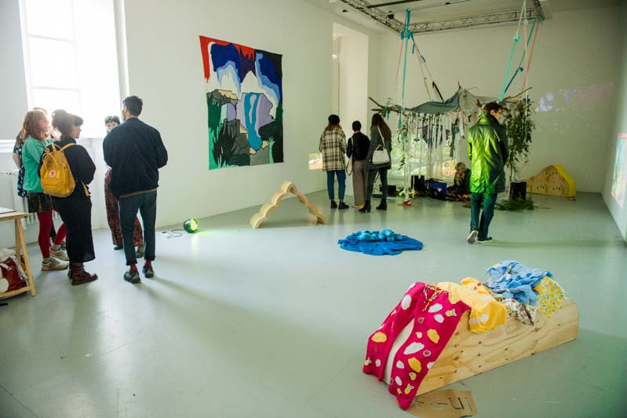
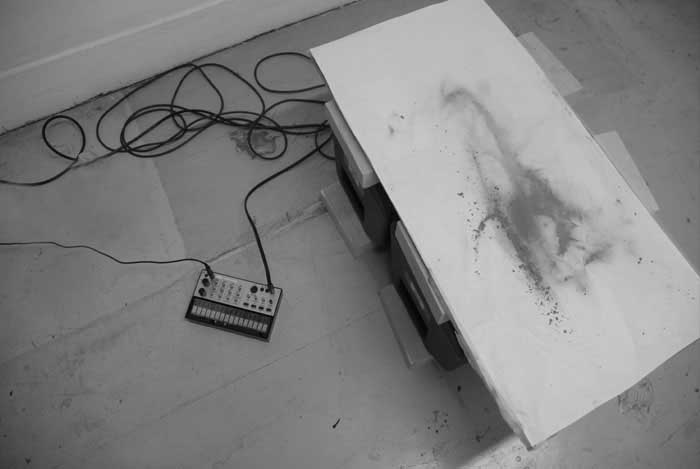
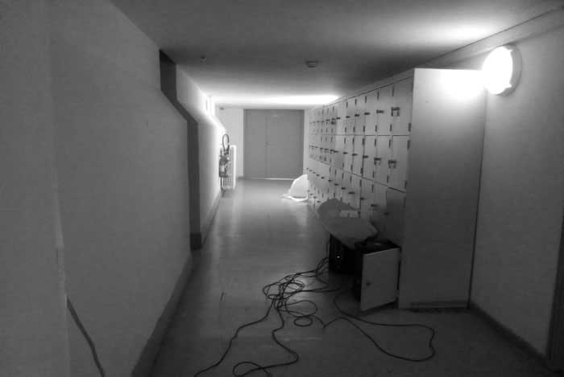

 Connected, 2019, solo show at Galerie du Quai, isdaT, Toulouse
The Nexus, 2018, solo show at 309, isdaT, Toulouse
Ad, 2018, solo show at Galerie du Quai, isdaT, Toulouse
EX, 2018, solo show at The Staircase, isdaT Toulouse
Talk To Me, 2019, solo show at 310, isdaT, Toulouse
Wall, 2017, solo show at The Starcase, isdaT, Toulouse
Don't Talk About Kevin, 2017, collective show Patrice Gogues and Ioa Béduneau at The Staircase, isdaT, Toulouse
 Les Mims, 2019, collective show with Emmanuelle Pozzo, Eleonore Verger (Orque), Constantin Doggydogg (Cochon Mort), and Beliz Hangun (Night Nurse & Bad Botox) at Galerie du Quai during the JPO, isdaT, Toulouse
 κῦμα -test.1, 2017, solo show at The Corridor, Toulouse
κῦμα -test.2, 2017, solo show at The Corridor, Toulouse
 κῦμα -test.lockers, 2017, solo show at The Corridor, Toulouse